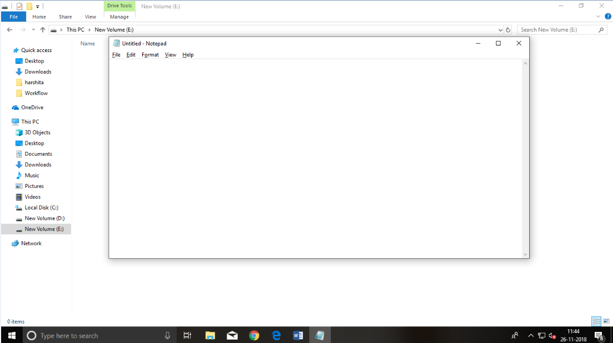
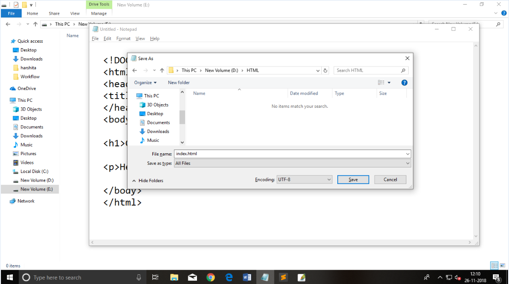
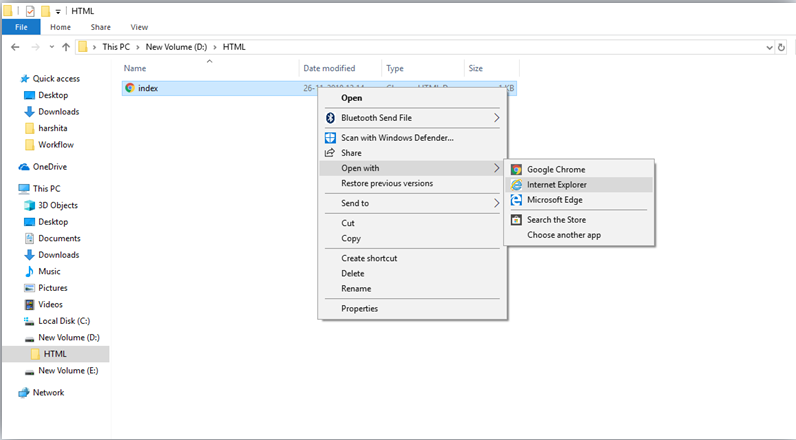
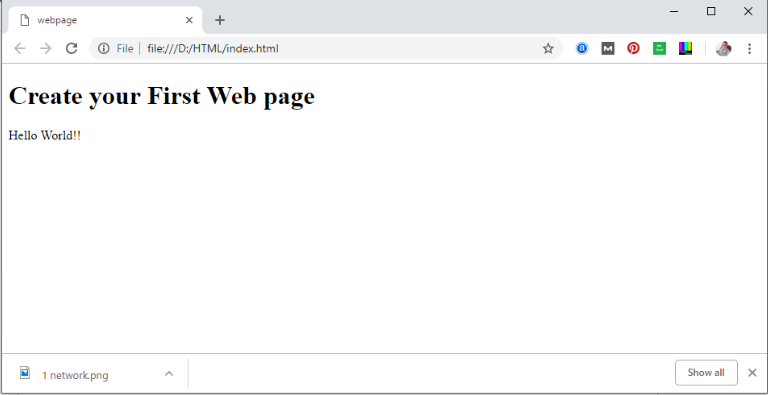
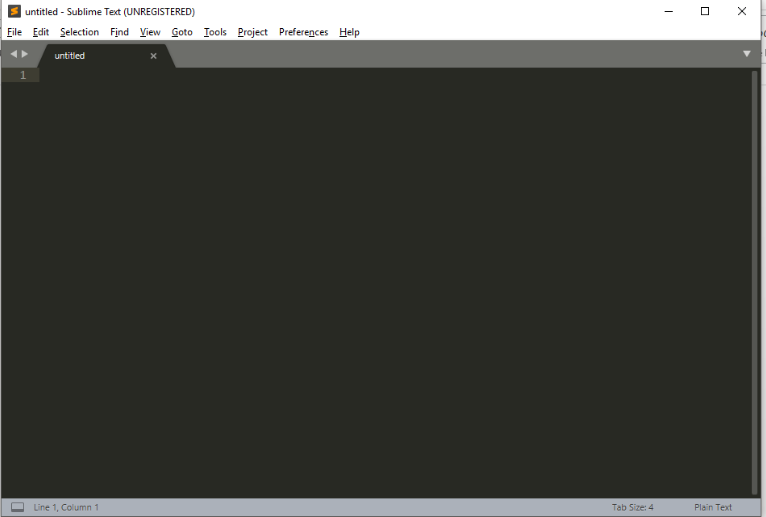
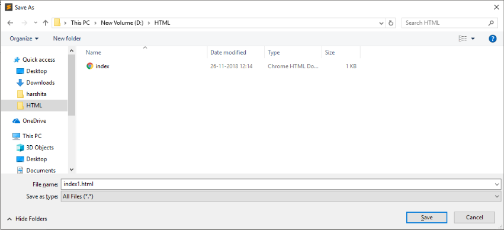
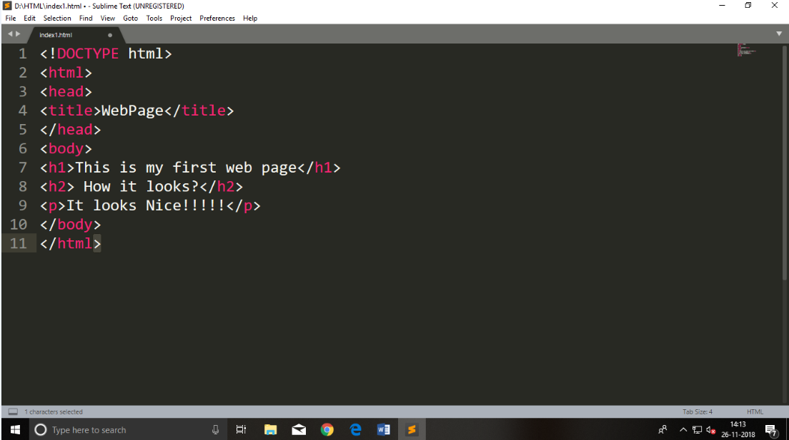
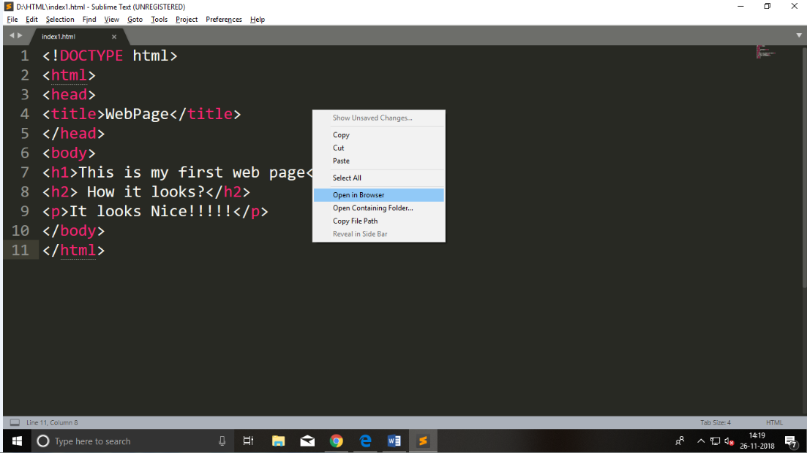
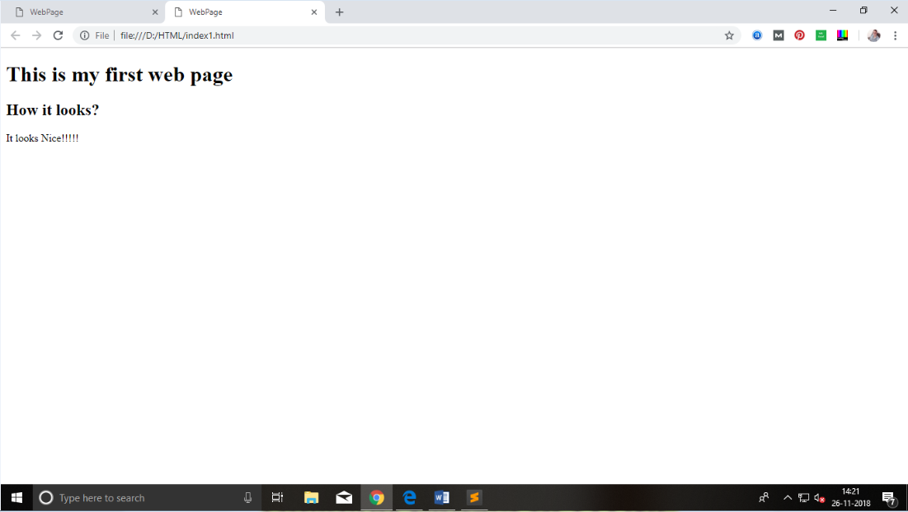

Notepad is a simple text editor and suitable for beginners to learn HTML. It is available in all versions of Windows,
from where you easily access it.
Step 1: Open Notepad (Windows)

Step 3: Save the HTML file with .htm or .html extension.
Step 4: Open the HTML page in your web browser.
To run the HTML page, you need to open the file location, where you have saved the file and then either double-click on file or click on open with option

When you will learn the basics of HTML, then you can use some professional text editors, which will help you to write an
efficient and fast code. So to use Sublime Text editors, first it needs to download and install from internet. You can
easily download it from this https://www.sublimetext.com/download link and can install in your PC. When installation of
Sublime text editor done then you can follow the simple steps to use it:
Step 1: Open Sublime Text editor(Windows 8):
To open Sublime Text editor go to Start screen ⤏ type Sublime Text⤏ Open it. To open a new page press CTRL+N.

Step 2: Save the page before writing any code.
To save your page in Sublime Text press Ctrl+S or go to File option ⤏ save, to save a file use extension .htm or .html.
We recommend to save the file first then write the code because after saving the page sublime text editor will give you
suggestions to write code.

Step 3: Write the code in Sublime Text editor

Step 4: Open the HTML page in your Browser
To execute or open this page in Web browser just right click by mouse on sublime text page and click on Open in Browser.

